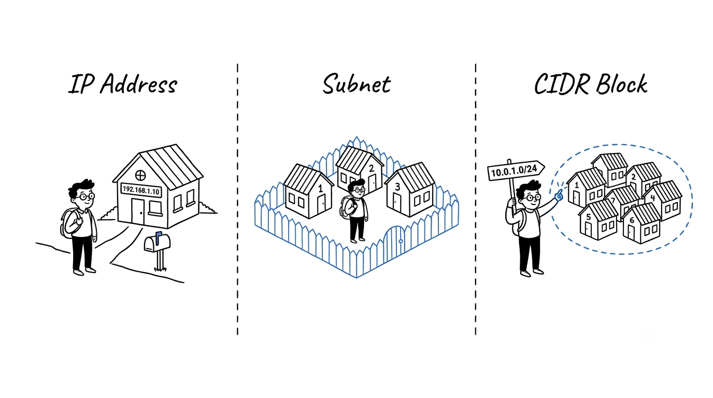

IP Addresses, Subnets, and CIDR Blocks — Explained Without the Math

A jargon-free, metaphor-driven guide to how IP addresses, subnets, and CIDR blocks really work — no bits, no binary, just streets and houses.
Most networking guides drop you straight into bits and binary. You do not need any of that to actually understand how the internet is organized. One simple picture is enough: a city full of neighborhoods and houses. Hold that picture in your head, and everything else falls into place.
The Core Metaphor
Imagine a large city.
- The city is the entire network (the internet, or your company's cloud network).
- A neighborhood is a subnet — a defined area with its own boundaries.
- A house is a device — a laptop, a server, a phone, a database.
- The house address is the IP address — every house needs one to receive mail.
- A CIDR block is just the city's official way of writing down "this neighborhood owns these house numbers."
That is it. The whole topic is just the post office's filing system.
1. IP Address — The House Address
What it is
An IP address is a unique number that identifies a device on a network. It is how data finds its way to the right machine, exactly like a postal address finds the right house.
You have seen one. It looks like this:
192.168.1.10
Four numbers separated by dots. That is the address of one specific "house."
Public vs private addresses
Some addresses are reachable from the open internet, and some are only valid inside a private network:
- Public IP — like a house on a real street, visible to anyone delivering mail from anywhere.
- Private IP — like a desk number inside an office building. Useful inside the building, but the postman on the street does not know about it.
This is why your laptop at home might be 192.168.1.42 and your neighbor's laptop might also be 192.168.1.42. Same desk number, different buildings. No conflict.
Real-world example
When you open a website:
- Your laptop has a private address inside your home network.
- Your router has a public address from your internet provider.
- The website has its own public address somewhere on the internet.
- Data hops between these addresses until it reaches the right house.
The IP address is the destination on the envelope. Everything else in networking is about getting the envelope there.
2. Subnetting — Dividing the City Into Neighborhoods
What it is
Subnetting is the practice of splitting a big address space into smaller, organized chunks called subnets.
In the metaphor: instead of one giant city where every house is on one endless street, you carve the city into neighborhoods. Each neighborhood has its own boundaries, its own rules, and its own purpose.
Why we bother
A city with no neighborhoods would be chaos:
- The mail carrier would have to search the entire city for every letter.
- There would be no way to put a fence around the bank district.
- A noisy block party would disturb the whole city at once.
- You could not say "the school zone has stricter speed limits."
Subnets fix all of that for networks. They give you:
- organization — group similar devices together,
- security — put walls and gates between groups,
- efficiency — the "postman" (the router) knows exactly where to deliver,
- separation — keep production away from development, finance away from guests.
Real-world example: an office building
Picture a 4-story office:
- Floor 1: Reception
- Floor 2: Engineering
- Floor 3: Finance
- Floor 4: Executives
Each floor is a subnet. Finance gets a stricter badge policy. Engineering's experiments cannot leak into Finance. Visitors are routed to the right floor cleanly.
That is exactly why we subnet networks — same reasoning, applied to data instead of people.
3. CIDR Block — The Street Sign for a Neighborhood
This is the part most explanations make complicated. We will not.
What a CIDR block really is
A CIDR block is just a shorthand way of writing down which house numbers belong to a neighborhood.
It looks like this:
10.0.1.0/24
You can read that out loud as:
"This neighborhood owns 256 addresses, starting from
10.0.1.0."
That is it. The slash and the number are just the city's official way of saying "the neighborhood is this big."
The intuition behind the slash number
Here is the only rule you need to remember:
A smaller number after the slash means a bigger neighborhood. A bigger number after the slash means a smaller neighborhood.
It feels backwards at first, but think of it this way: the slash number tells you how specific the address is.
/8is very general — like saying "anywhere in California." Millions of houses./16is more specific — like "anywhere in Los Angeles." Tens of thousands of houses./24is even more specific — like "anywhere on Maple Street." A few hundred houses./32is one exact house — "1428 Maple Street." Just one.
The more digits the address pins down, the smaller the neighborhood.
A simple reference table
You do not need to do any math. Just memorize the rough sizes:
| CIDR | How big the neighborhood is | Real-world feel |
|---|---|---|
/32 |
1 address | A single house |
/28 |
16 addresses | A small cul-de-sac |
/24 |
256 addresses | A normal street |
/20 |
~4,000 addresses | A small town |
/16 |
~65,000 addresses | A big district |
/8 |
~16 million addresses | A whole region |
When a cloud engineer says "give me a /24," they are saying "give me a normal-street-sized neighborhood, about 256 addresses." That is all.
Real-world example: numbering houses
Imagine a neighborhood where the street sign says:
"Maple Street — houses 100 through 199."
That sign is doing exactly what a CIDR block does. It tells the postman:
- the neighborhood name (Maple Street),
- the range of valid house numbers (100–199),
- and therefore which mail belongs here and which does not.
10.0.1.0/24 is the same idea: "This neighborhood owns addresses 10.0.1.0 through 10.0.1.255." That is all you need to know to use CIDR confidently.
Putting It All Together: A Cloud Example
This is exactly how cloud networks (like AWS VPC, Azure VNet, or GCP VPC) are designed in the real world.
Step 1: Pick the city
Choose the overall address range for your cloud network:
City (VPC): 10.0.0.0/16 → about 65,000 addresses
That is your whole city. Plenty of room.
Step 2: Carve out neighborhoods (subnets)
Split the city into purposeful neighborhoods:
Public neighborhood A: 10.0.1.0/24 (256 addresses, near the city gate)
Public neighborhood B: 10.0.2.0/24
Private neighborhood A: 10.0.11.0/24 (no direct street to the outside)
Private neighborhood B: 10.0.12.0/24
Database neighborhood A: 10.0.21.0/24 (locked, no outside access at all)
Database neighborhood B: 10.0.22.0/24
Step 3: Place the houses
- A load balancer lives in the public neighborhood — it greets visitors.
- Application servers live in the private neighborhood — they do the work, but visitors cannot walk in directly.
- Databases live in the database neighborhood — locked, gated, no outside access.
Each device gets one address from its neighborhood. Just like a house gets one number on its street.
Step 4: Set the gates and the roads
- Routes are like street maps — they tell traffic which way to go.
- Firewalls / security groups are the locks on each house and the gates around each neighborhood.
That is basically the entire design pattern of a production cloud network. Just addresses, neighborhoods, and signs.
A Few Friendly Tips
- Plan the city big, the neighborhoods comfortable. A
/16city gives you room to grow./24neighborhoods are a great default — not too big, not too small. - Leave gaps between neighborhoods. Do not number them back-to-back. You will thank yourself when you need to add a new one.
- Never let two cities share the same street names. If you ever connect two networks together and they overlap, the postman gets confused and mail gets lost. Pick non-overlapping ranges from day one.
- Remember that a few addresses in every neighborhood are reserved for the city's own use (street signs, fire hydrants, that sort of thing). The neighborhood is slightly smaller than it looks.
- Write the map down. A simple table of "which neighborhood is for what" saves hours of debugging later.
How the Pieces Fit Together
| Concept | Real-world picture | What it actually does |
|---|---|---|
| IP address | A house number | Identifies one specific device |
| Subnet | A neighborhood | Groups related devices together |
| CIDR block | A street sign saying "houses 100–199" | Declares which addresses belong to a neighborhood |
| VPC / network | The whole city | The total address space you own |
Common Misunderstandings
- "A bigger slash number means a bigger network." Opposite.
/16is much bigger than/24. Smaller slash = bigger neighborhood. - "Private addresses are automatically safe." Private just means "not visible from the public street." Inside the building, you still need locks on the doors.
- "I can use any addresses I want." Technically yes, but if you ever connect to another network and you have used the same ranges, you will have a painful renumbering project ahead.
- "Subnetting is only for huge companies." Even a home network benefits from separating smart-home gadgets, guest Wi-Fi, and trusted laptops into different neighborhoods.
Key Takeaways
- An IP address is a house number — it points to one specific device.
- A subnet is a neighborhood — a meaningful slice of the city, used to organize and protect what is inside.
- A CIDR block is the street sign — a short, standard way of writing down exactly which addresses belong to that neighborhood.
Final Thought
Networking only feels intimidating because the words sound technical. The underlying idea is just a well-organized city with clearly labeled streets. Once you can picture houses, neighborhoods, and street signs, you can read any cloud network diagram and understand what it is really saying — without ever touching a single bit of binary.